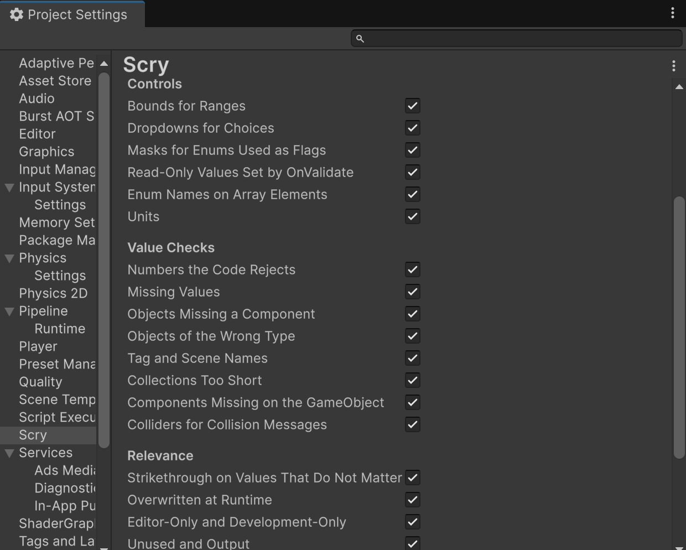
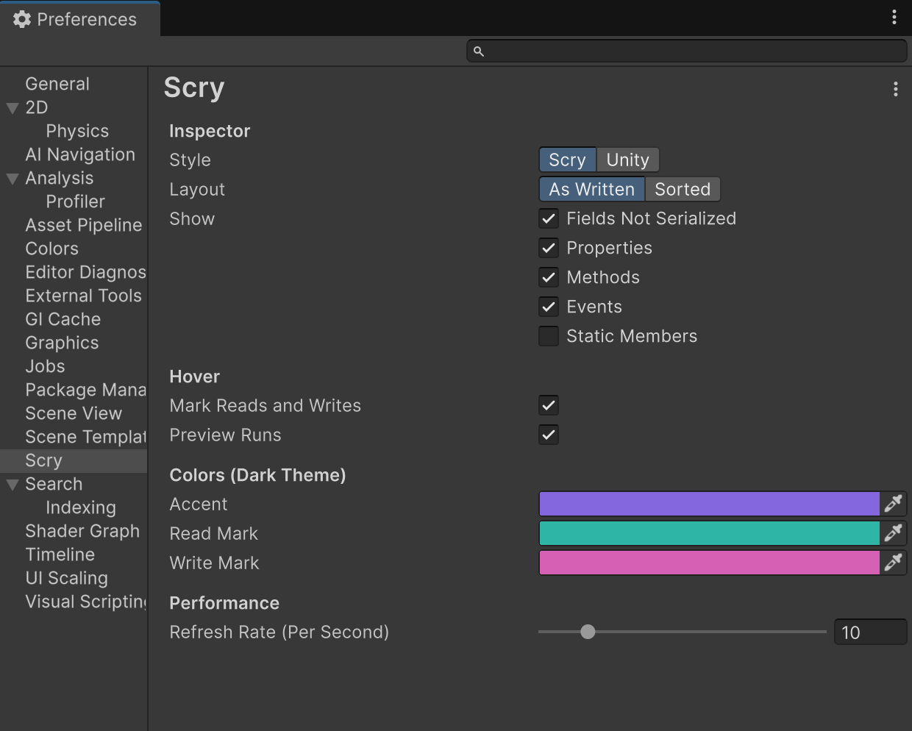

Settings for the team, preferences for you
Project Settings
Shared with the team through your VCS.

Project Settings > Scry: Controls, Value Checks, Relevance, Code Formatting">
Preferences
Just for you: layout, colors, refresh rate.

Preferences > Scry: Style, Layout, Show, hover marks, colors, refresh rate">